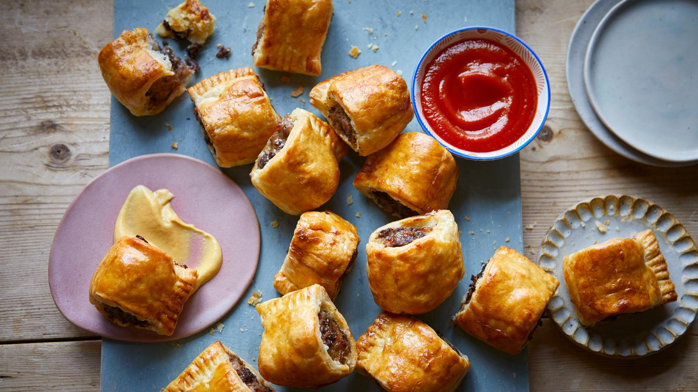

Air Fryer Sausage Rolls with Black Pudding

Description
Sausage rolls with a hint of black pudding.
Ingredients
- 300g/10½oz sausage meat or sausages with skins removed
- ½ tsp mustard powder
- ½ tsp dried sage
- ½ tsp dried thyme
- 100g/3½oz black pudding, casing removed, roughly chopped
- 1 sheet (320g) ready-rolled puff pastry
- 1 free-range egg, beaten
- Your favourite dipping sauce, to serve
Steps
- Using a fork, mix together the sausage meat, mustard powder, herbs and black pudding.
- Using your hands, mould the mixture into two long sausage shapes.
- Cut the pastry in half lengthways.
- Lay the meat mixture along the centre of each piece of pastry.
- Brush the edges with beaten egg, then fold the pastry over the filling and crimp the edges with a fork to seal.
- Cut into sausage rolls, to the size you prefer.
- Brush over the sausage rolls with beaten egg, then air-fry at 200C for 12 to 14 minutes until golden brown.
- Serve hot or cold, with your favourite dipping sauce.
Home